My Game Work: Good Night, Joy.
I started this game project in January 2018, as a leader, story teller, animation maker, level designer and the project manager. I finished every work in the highest quality I could reach, but I fell to be a good project manager. I stuck because I tried to finish everything on my own. However, I’m also glad to show you the progress I made and tell you the story and design of my game.
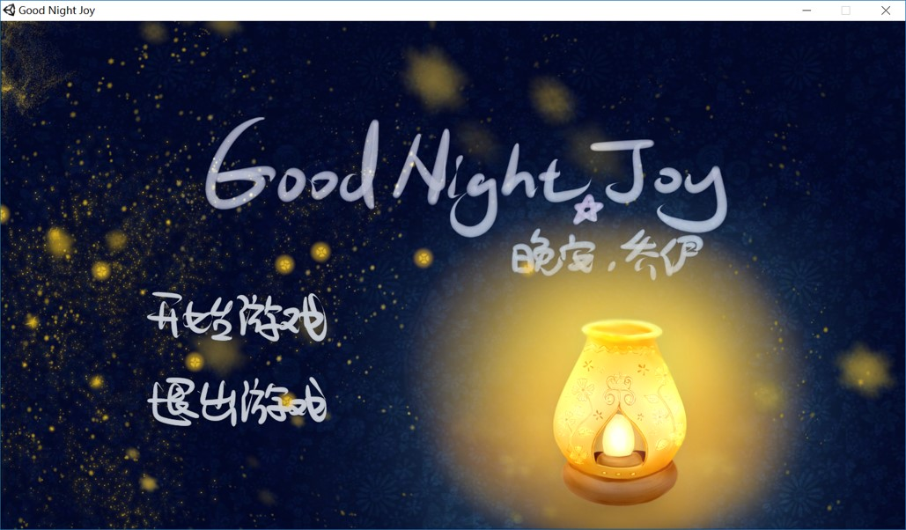Storytelling and Level Designer Part:
The story of the game is aim at conveying understanding and care for lonely teens.
The heroine of the game is a teenage girl, names Joy. With the name of “happiness”, having peaceful life and pretty score at school, she
contradictorily suffered from daily anxious which nobody around could understand. In the maze of nightmare, she is totally on her own. Will
she finally cure herself by reminding the hopeful side of life, or drown into the infinity abyss of fear? It depends on each choice and
performance of the player.
In my opinion, computer games is acts of creation, pathways for expressing one’s own individual philosophy, which should be deeply rooted and passionately generated from experience. I am always nightmare because I am anxious and nervous about so many things in my daily life. I suffered from those creepy sense every night for years, but I have been attracted to them day by day. I want to share and express what I saw, tracing their meanings and the influence on my mind. What’s more, to comfort more people suffered from nightmare and to call others understandings. Even people who seems have nothing to worry about, nameless fear and anxious may bit their heart inside.
The game was divided into two parts, the days and the nights. In the daytime, the player will chat with Joy in her bedroom, to glance her feelings and past, while searching stuff and place them at the right place by Joy’s hints, which will become buffs of the night level. Most daytime talks will make a slight influence on Joy’s mod. Besides “mod”, Joy has another property, “sanity”. “Mod” influenced by the chatting with player, and “sanity” influenced by the score of the night part. 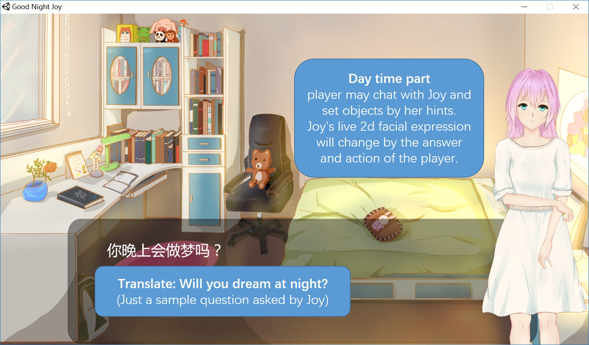 These two properties decide the result of the game, which have multiple endings. As for the night part, the player need to control Joy to escape her nightmare and pick up lighting balls to gain extra scores and keep the sight, since it will get darker by the time. The nightmare world reflects the real-life anxious and fear. I am also in charge of design and paint the nightmare map.
Joy’s first nightmare is about her school. I use red color in background to reflect her anxious and design a monster based on the anxious of ticking clock. In this nightmare, Joy need to search her way to the exit door and find the key before the sight gets dark or killed by the monster. She can light her sight by gain lighting ball and step on pedal switch to open her ways.
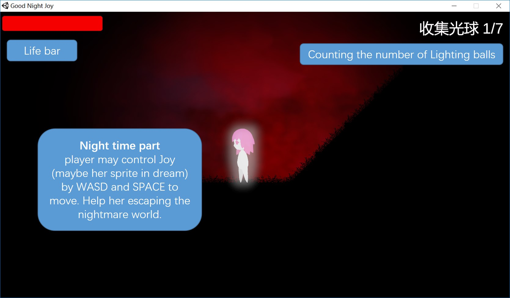 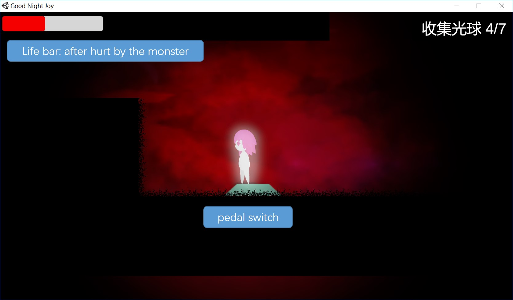 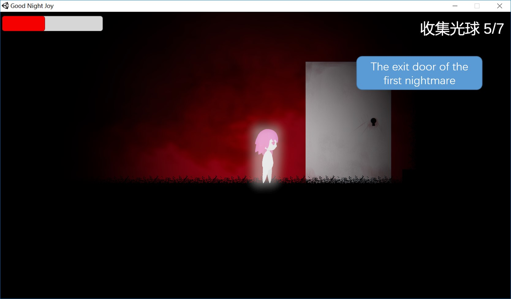One of the earliest version design of the night part I used a bird to represent Joy’s sprite, and every thing in the scene are releasing particles. The map is more bumpy too.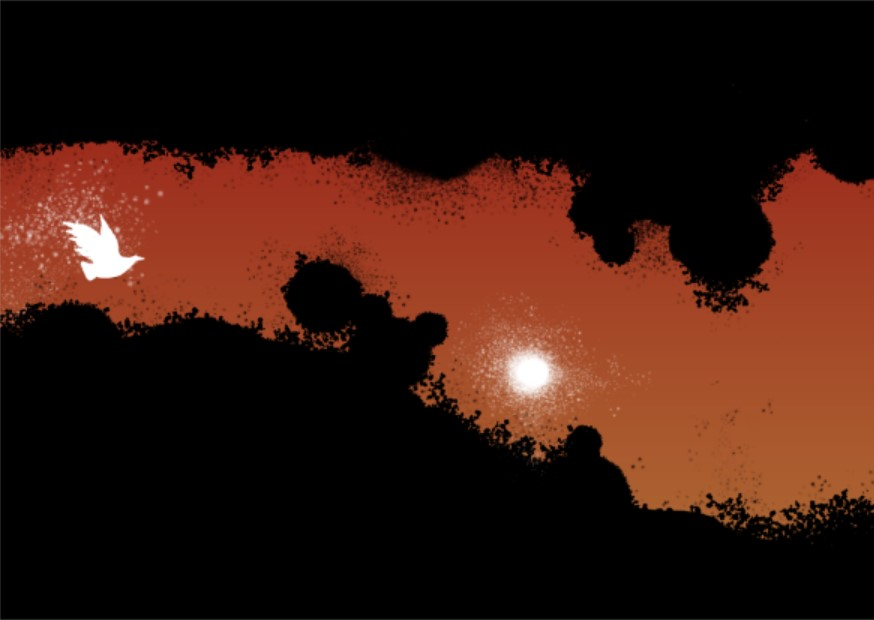 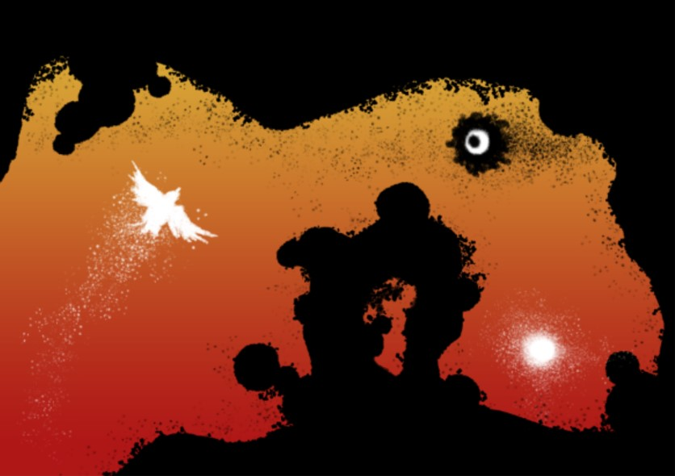
While, in the final design, night part joy shows as a little girl, and the map is more horizontal to meet the requirement of tile map making.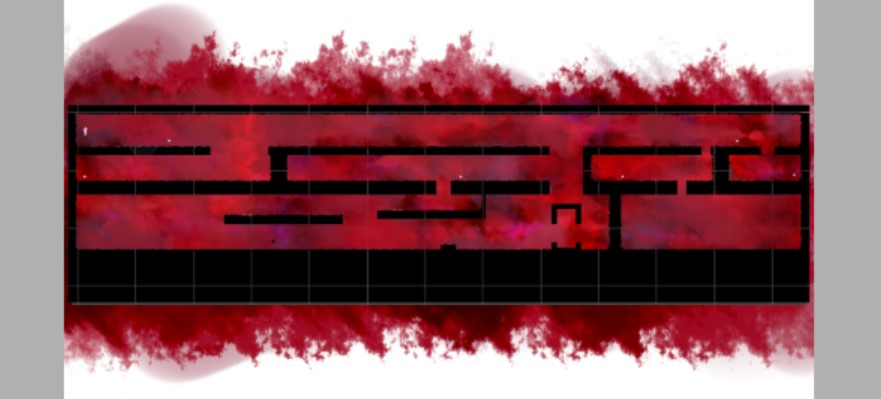
Animation Making Part:
I used live2d technic to improve the visual effect of daytime level. When players chat with Joy, her facial expression will change by the current “mod” and “sanity”, to create a better connection between the game and player. Using the source painting of my groupmate, I build the live2d model in Live2D Cubism Editor 3.1, setting the possible facial movement and designing the animation based on those movements.
| 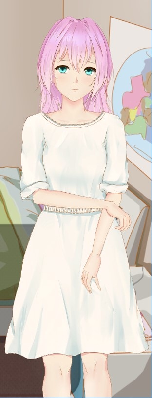 | Joy's facial animation in game,made by live 2D. |
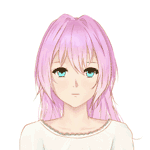
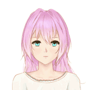
 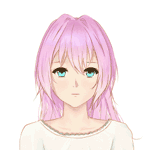
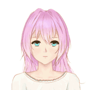
|
I used Spriter, a powerful 2d animation builder bought on steam, to make the night part characters’ animation, including Joy herself and nightmare monsters she will meet. I draw the source picture and import them to the Spriter, binding and making animations. Finally, export animation sprites for the game programmer.
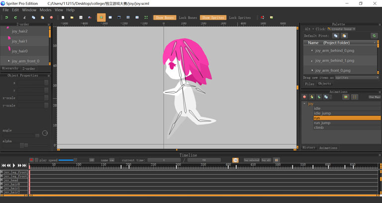| 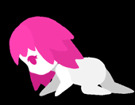 |
 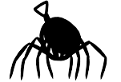
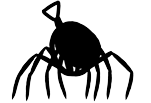
|
The test effect in Unity.
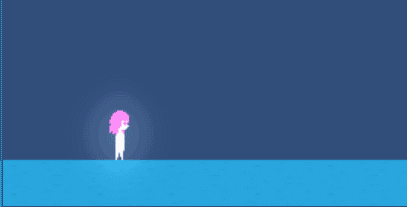